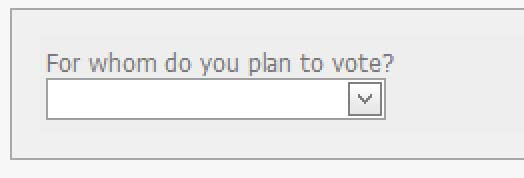

(switch)
i360 Calls for iOS and Android

Background
i360 needed to update the web client for its Predictive Dialer software for placing phone surveys. ( For more background on the PD and i360 Calls, see the i360 Calls for iOS and Android portfolio item.)
The Predictive Dialer had a number of performance and usability problems. An ASP.NET Web Forms application, it was not written with modern front-end code and employed off-the-shelf UI components that were poorly matched to the user’s tasks, and it was especially unfriendly as a touch interface. For example, drop-down lists were used to enter survey answers, meaning that the possible answers were initially hidden from the user, who had to click on the widget to reveal the answer list, and then click again to select an answer:
The new Web client, now called i360 Calls, was to be rewritten using AngularJS. This allowed me to take a redesign from concept and mockups all the way to implementing the design in semantic HTML and CSS.
{kind=link}
The Users
As was the case with i360 Calls for iOS and Android, the users were mainly volunteers and entry-level staffers who could not be assumed to have any special expertise beyond web-browsing skills. Many of our own staffers would also be using and testing the app. Therefore, I had some access to eventual users, but for various reasons, I wasn't able to gather as much information about our main user base as I would have liked.
Design & Development
After gathering requirements from management and our internal users of the app, I set out to build a set of wireframes. I had spent a good deal of time with the previous version of the app, so I was well acquainted with its shortcomings.
Wireframe Excerpt (PDF)After several rounds of feedback and revisions, I implemented the designs into HTML prototypes that would serve as the basis for the app’s HTML and CSS code.
{kind=link}
I consolidated the questions and answers onto a single screen in order to eliminate the need to load a new page for each question/answer pair — instead, the user could quickly scan the entire survey’s questions and answers. For answer selection, I employed standard HTML radio-button and checkbox widgets while making large, button-like labels in CSS. This particularly improved usability for tablet users, who had trouble with the small, fussy controls employed on the previous version of the app.
While we originally planned to use AngularJS to implement the app, we had to use Web Forms for the initial iteration, which necessitated a good deal of work retrofitting the front-end code to accommodate Web Forms’s peculiarities. The second iteration was built using AngularJS, which allowed much more of the original package of HTML and CSS to be used for the project. Through all phases of development, I worked closely with our programmers and QA team.
HTML Prototype Page Sample{kind=link}
The sample page linked above shows part of an HTML/CSS prototype of a question-and-answer page. I wrote the front-end code following object-oriented CSS principles. I used LESS to write stylesheets and a subset of the Bootstrap framework for elements like alerts and dialog boxes.
Results & Conclusion
The management was pleased with this redesign of the Calls for Web and felt that it had been long overdue. We also got positive reviews from our own staffers who tested and used the app themselves and were also responsible for setting it up and demonstrating it for clients. The application was also met with praise from clients, who praised it for its ease of use. Unfortunately, we did not engage in formal usability testing or gather feedback in a systematic way, which would probably have benefited the app greatly and uncovered usability issues.
I was especially pleased to be able to implement the design myself using HTML and LESS, working closely with our developers, which allowed me to make fine-grained adjustments to the app’s appearance and behavior.